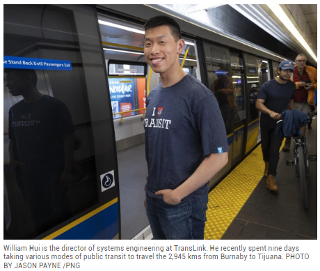
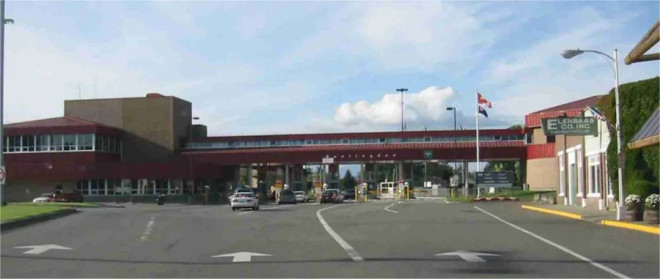
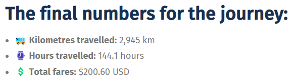
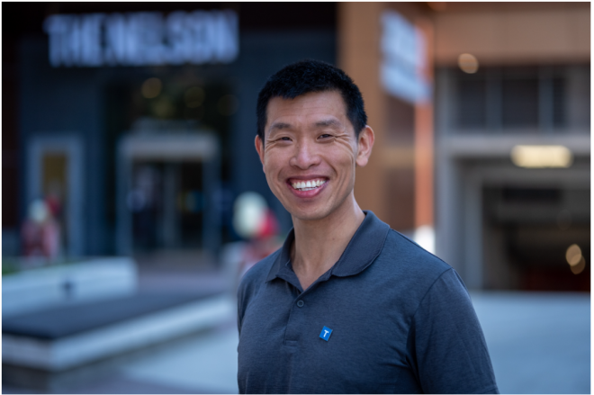
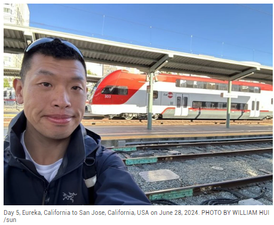
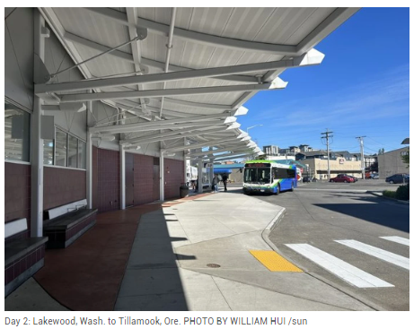
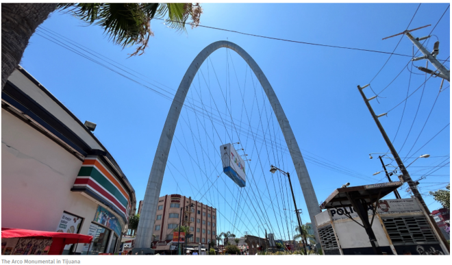

难以置信的壮举
在习惯搭乘飞机出行的北美，你能想象有人会选择乘坐公共交通工具，从加拿大温哥华一路南下，直到墨西哥边境城市蒂华纳吗？
这听起来像是一场疯狂的冒险，但对于温哥华华裔居民威廉·许（William Hui）来说，这却是一次令人难忘的九天旅程。

6月24日，当许先生步行10分钟从阿伯茨福德的一个公交站来到萨马斯（Sumas）边境检查站时，美国边境工作人员露出了难以置信的表情。
“边境人员问我要去哪里，我说圣地亚哥。他又问我怎么去，我告诉他我要乘公共交通。”许先生回忆道，“他看起来很困惑，似乎从未听说过有人这样做。他态度很友好，但明显感到惊讶。”
尽管如此，许先生详细的行程计划最终还是说服了这位边境工作人员，让他得以继续他的奇妙之旅。

这趟看似不可思议的旅程始于本拿比的Lougheed天车站。许先生用了9天时间，经历了惊人的50次转车，跨越了2,945公里的距离，最终抵达了墨西哥蒂华纳市中心。
整个旅程的车费支出为200美元，其中最贵的一段是从俄勒冈州库斯湾到布鲁金斯的175公里路程，花费了20美元。

相比之下，200美元几乎相当于他从圣地亚哥乘飞机回家的费用。但对许先生来说，这次旅行的意义并不在于寻找最便宜或最快的路线，也不在于目的地本身，而是在于这九天的旅程中所体验到的一切。
当被问及他是否在旅途中如何排解寂寞，是否有阅读，听音乐，或只是单纯看着窗外时，许先生毫不犹豫地选了最后一项。
“我非常享受沿途的风景，”他说，“我喜欢观察小镇的布局，欣赏海岸线和森林的美景。”在加利福尼亚州，广袤的农田给他留下了深刻的印象。“我以前从空中看过这些农田，但沿着州际公路行驶时，你会对这些田地的规模和广阔程度有完全不同的感受。”

在这次旅程中，许先生遇到了形形色色的人，听到了许多有趣的故事。他发现，城市和乡村的乘车体验有着显著的差异。
在城市中心，大多数乘客都是上班族，与温哥华的情况类似。“在城市里，人们都在赶着去工作，忙着自己的事情，”许先生观察道。
而在乡村地区，除了通勤者外，还有探望监狱亲属的人、逃离家庭暴力的受害者，以及一些只是想要出去看看外面世界的人。
最让许先生感动的是乡村公交车上乘客之间的熟悉程度。“人们都知道彼此的名字，了解对方的家庭情况，聊着各自的日常生活，驾驶员也认识每一位乘客。即使是短短的一段车程，也能看到人们之间建立起的温暖联系，这真的很令人感动。在城市环境中，你很难看到这种情况。”

作为TransLink的系统工程总监，许先生对公共交通有着浓厚的兴趣，他喜欢探索乘坐公共交通，只为了看看能到达多远的地方。
在大温地区周边，他曾经乘车到过最东边的霍普镇，和最北边的不伦瑞克海滩（Brunswick Beach，位于海天公路的狮子湾附近）。而这次，他更是跨越了两个国际边境，完成了一次跨越加拿大、美国和墨西哥三国的公交之旅。
许先生对公共交通的热爱可以追溯到他的童年时期。“我最早的记忆之一，就是和祖母在唐人街。吃完午饭后，我们还有些时间，我就问她‘这辆公交车会开到哪里？’她虽然不知道，但问我是否想去看看。”

于是，祖孙俩就乘车到了West 41st Ave.和Carnarvon St的终点站。“那时我就想，‘原来我可以乘公交车去探索世界。’这个想法对我来说太新奇了。”
从那时起，许先生就开始将交通主题融入到他的各种项目中，甚至包括小学时期的作业。这份对公共交通的热爱，最终促使他完成了这次从温哥华到蒂华纳的”疯狂巴士之旅”。
值得一提的是，尽管许先生在TransLink工作，但这次旅行与他的工作并无直接关系，这纯粹是出于他个人对公共交通的兴趣和探索精神。

他的这次冒险不仅展示了北美公共交通系统的广泛覆盖，也让我们看到了一位华裔加拿大人对公共交通的热情和探索精神。
有时候，旅行的意义不在于目的地，而在于沿途的风景和遇到的人。在这个快节奏的时代，也许我们也该放慢脚步，乘坐一次长途公交，去感受不一样的旅行体验。
无论是穿越繁华的城市，还是行驶在宁静的乡间，每一段路程都可能带来意想不到的收获。
也许下次当我们登上公交车时，也会产生“不知道这辆车会把我带到哪里”的好奇心，开始我们自己的小冒险。